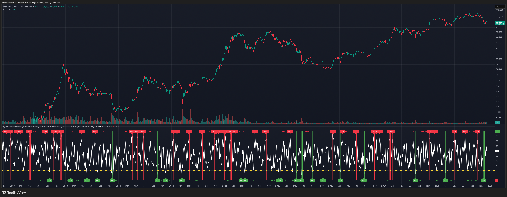

Hybrid Confluence (RSI, MFI, StochRSI) Two-Tier Momentum Framework
Many traders explore multi-oscillator hybrid confluence approaches that combine momentum and volume signals—most commonly RSI, Money Flow Index (MFI), and Stochastic RSI—to study stretched market conditions. These hybrid concepts are widely used to analyze potential exhaustion zones, cycle extremes, and periods of sustained buying or selling pressure across different timeframes, including hybrid frameworks discussed in crypto trading communities and by YouTubers such as Steve from Crypto Crew University.
At a conceptual level, most of these hybrid indicators rely on a familiar idea: combining RSI, MFI, and Stochastic RSI to identify momentum extremes and sustained pressure.
This script does not replicate, reverse-engineer, or replace any paid or closed-source indicator. Instead, it provides a transparent framework built exclusively from standard, well-documented technical indicators. All calculations are explicit and configurable, allowing traders to study hybrid momentum behavior without relying on black-box tools. The indicator is free to use on TradingView; the script is protected.
Screenshot preview. Once published, this can link to the TradingView script page.
What the Script Does
1. Builds a hybrid momentum confluence model
The script combines three widely used oscillators:
- RSI (Relative Strength Index) — price momentum
- MFI (Money Flow Index) — volume-weighted momentum
- Stochastic RSI — momentum relative to its own recent range
Each component operates on a normalized 0–100 scale, allowing meaningful comparison and aggregation.
2. Implements a clear two-tier signal structure
Instead of producing a single binary buy/sell output, the script separates early pressure from extreme conditions:
2-of-3 Confluence (Setups)
- When any two of the three oscillators reach oversold or overbought levels
- Displayed as semi-transparent circles
- Indicates building pressure or a developing condition
- Designed as a heads-up, not a trade signal
3-of-3 Confluence (Extreme Conditions)
- When all three oscillators reach oversold or overbought levels
- Displayed as prominent vertical bars spanning the oscillator range
- Represents extreme momentum alignment
- Intended to highlight potential exhaustion zones
3. Visualizes sustained pressure using consecutive signal intensity
When 3-of-3 conditions persist across multiple bars:
- Each consecutive bar becomes progressively darker (up to six discrete intensity levels)
- Darkness reflects duration and persistence, not prediction
This helps visualize scenarios where markets continue pushing higher or lower before a major turning point, rather than assuming a single signal marks the exact top or bottom.
4. Works across markets and timeframes
- Works on crypto, equities, futures, and FX
- Scales naturally from intraday to higher timeframes
- Useful on Daily and multi-day charts for macro momentum context
Why This Script Is Useful
Traditional oscillators often produce isolated signals that lack context. This framework adds clarity by:
- Requiring multi-indicator agreement instead of single-signal triggers
- Separating early pressure from extreme conditions
- Showing how momentum can persist before a reversal
- Avoiding binary “buy now / sell now” outputs
- Remaining transparent and configurable
This makes the tool especially useful for swing traders, macro and cycle-focused traders, crypto traders studying extended momentum phases, and analysts who prefer contextual signals over rigid rules.
How to Use
- Adjust RSI, MFI, and StochRSI lengths to suit your timeframe
- Observe 2-of-3 circles as early warnings of building pressure
- Watch 3-of-3 bars for extreme momentum alignment
- Note increasing intensity as pressure persists
- Combine with structure, trend, volume, or price action for decisions
This script is best used as a contextual tool, not a standalone trading system.
What This Script Is Not
- Not a recreation of any paid or proprietary indicator
- Not affiliated with any trading educator or platform
- Not intended as a predictive or standalone trading system
- Does not claim to identify exact tops or bottoms
All signals are derived solely from openly documented RSI, MFI, and Stochastic RSI calculations.
Important Notes
- This script is original, with a transparent methodology
- All calculations use standard, well-known technical formulas
- No hidden logic or undisclosed weighting is used
- Signal visuals are descriptive, not predictive
Not signals. Not alerts. Not shortcuts.
The goal is to document how indicators work — not to tell anyone when to trade.
If an indicator can’t be explained down to its underlying mechanics, it probably isn’t understood well enough to trade.
Disclaimer
This tool is provided for educational and analytical purposes only. It does not constitute financial advice or a recommendation to trade. Always validate settings, test on multiple assets and timeframes, and use proper risk management before trading live.